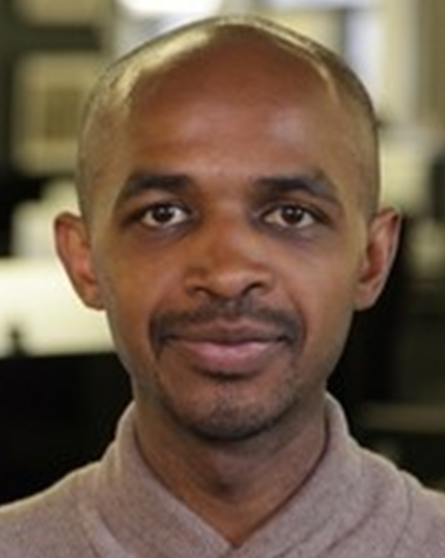

2020
inno-con
2020이노베이션아카데미컨퍼런스
: CHANGE THE WORLD WITH SOFTWARE

인사말씀
-
이민석
이노베이션 아카데미 / 학장이민석
이노베이션 아카데미 / 학장이민석
이노베이션 아카데미학장이민석은 우리나라에 PC가 처음 들어올 때 쯤 대학에 입학해 컴퓨터를 배우기 시작해 수 많은 회사와 일을 해왔으며, 95년에 서울대에서 컴퓨터공학으로 박사 학위를 받았습니다. 90년대 후반에는 선후배들과 팜팜테크라는 리눅스로 스마트폰을 만드는 회사를 만들어 달렸지만 늘 그렇듯이 사업은 성공하지 못한 대신 그 회사를 거쳐 갔던 많은 개발자들이 훌륭한 리눅스, 오픈소스 개발자로 성장할 수 있도록 도운 것을 자랑스럽게 생각하고 있습니다. 그 후, 한성대학교, NHN NEXT, 국민대학교에서 소프트웨어 인력을 양성하였고, 지금은 (재)이노베이션 아카데미에서 소프트웨어 혁신 인재 양성과 개발자 생태계 활성화에 힘을 쓰고 있습니다. 페이스북과 블로그(https://hl1itj.tistory.com)도 운영합니다.
He entered university in 1982, received his Ph.D. in computer engineering from Seoul National University in 1995. He worked with 100's of companies. In the late '90s, he was the CTO of PalmPalm Tech that made Linux smartphones. As the professor in Hansung University, Kookmin University, the Dean of NHN NEXT, and now the Dean of Innovation Academy Foundation, he is fostering software developers and innovators and vitalizing the developer eco-system. His twitter handle is @Minsuklee.
키노트스피치: 왜 42인가?
-
소피 비제
ECOLE42 / 교장소피 비제
ECOLE42 / 교장소피 비제
ECOLE42교장에콜42를 이끌고 있는 소피 비제 교장은 정보기술(IT) 인재 양성소의 총책임자인 만큼 그 역시도 유명한 컴퓨터 프로그래밍 개발자 겸 교수다. 그는 피에르마리퀴리대를 졸업해 소르본대 박사 학위를 취득했다. 에콜42 교장으로 부임하기 전에는 약 3년간 에피텍 코딩 아카데미 디렉터로 활동했다. 한국에도 여러 차례 방문해 혁신적 교육 모델과 관련해 강연한 바 있다.
GLOBAL 42 소개
-
박현병
42 SV / 교육생
박현병
42 SV / 교육생
박현병
42 SV교육생박현병은 42 Silicon Valley의 학생이다. 인공지능과 양자컴퓨터에 관심이 많으며 AI 엔지니어를 목표로 열심히 정진중이다. -
선우문형
42 SV / 교육생선우문형
42 SV / 교육생선우문형
42 SV교육생현재 NHN Edu 연동개발팀에서 근무하고 있다. UC davis에서 animal science를 전공하였지만 수의대학원 진학하는 대신 42 실리콘벨리에서 프로그래밍 공부를 시작으로 개발자의 길을 선택했다. 약 1년동안 42 과정을 진행했고 42서울 보칼로 오기전까지 42실리콘벨리의 프로그램 중 하나인 42accelerate(스타트업 인큐베이터)에서 스타트업을 시작하여 unity로 AR모바일게임을 개발했다. -
황보미
42 SV / 교육생황보미
42 SV / 교육생황보 미
42 SV교육생전 이노베이션 아카데미 재단의 교육운영팀 피씬 담당 인턴으로 근무했으며, IT 문제 처리, 업무 자동화 등을 주로 담당했다. 현재는 42 Silicon Valley의 학생들과 플라스틱 오염을 줄이기 위한 AI 프로그램을 개발하고 있다. -
이재석
ECOLE42 / 교육생이재석
ECOLE42 / 교육생이재석
ECOLE42교육생이재석______________________________________
[LIVE] 성공적인 학습을 위한 전문가 대담
-
김수보
전) KTH 개발자김수보
전) KTH 개발자김수보
전) KTH 개발자삼성SDS, 지어소프트, kth 등에서 근무한 경험이 있는 24년차 개발자로 스타트업, 포털, SI 분야를 폭넓게 경험하였습니다. 주요분야는 이동통신, SNS, 플랫폼 분야, 대량 트래픽 처리 및 분석, 백엔드 서비스입니다. 대외활동으로 okky.kr, 아재개발단 등 개발자 활동과 모비인사이드, beSUCCESS 컬럼니스트로 활동하고 있습니다. -
오종인
전) 소셜박스 CTO
오종인
전) 소셜박스 CTO
오종인
전) 소셜박스 CTOLG전자/모토로라/SK텔레텍/팬택 등에서 CDMA단말 SW개발자, kth에서 모바일 서비스 개발 팀장, 이후에 다이소 관계사와 시지온, 신생 금융그룹인 VI금융 관계사인 소셜박스에서 핀테크 스타트업 CTO로 근무한 경험이 있는 22년차 개발자입니다. 주요분야는 AWS 마스터 (운영, 배포 등 DevOps 까지 풀써클 경험)와 안드로이드 개발자 마스터입니다. 서강대/국민대/동국대 기술멘토로 참여한 경험이 있습니다. -
이호준
전) 네오위즈 개발자이호준
전) 네오위즈 개발자이호준
전) 네오위즈 개발자아프리카TV ( FreecN CTO), 네오위즈게임즈 (피망) 등의 경험이 있는 16년차 개발자입니다. 주요분야는 게임 플랫폼 아키텍트와 인터넷방송 플랫폼입니다. 코딩클럽,엄마아빠가 알려주는 코딩, 아프리카TV BJ ( 코딩으로우주정복 ) 등의 다양한 대외활동 경험이 있습니다.
[LIVE] 키노트 스피치 : 개발 생태계가 원하는 인재와 기업의 역할
-
김성훈
업스테이지 / 대표김성훈
업스테이지 / 대표김성훈
업스테이지대표김성훈 대표는 홍콩과기대 교수로 재직하면서 ICSME (세계적인 소프트웨어 유지 관련 분야 콘퍼런스) 에서 10년 동안 가장 영향력 있는 논문상을 수상하고 ICSE (세계소프트웨어엔지니어링학회), FSE(소프트웨어엔지니어링재단) 등 세계 최고 수준의 소프트웨어 공학회의 우수논문상 (SIGSOFT Distinguished Paper Award) 을 4차례 수상했습니다. 2017년 네이버에 합류해 NAVER Clova AI팀을 세팅하고 비전/OCR, 음성인식, 음성합성, NLP 팀들을 리딩했고 네이버 30군데 이상 AI서비스를 도입했습니다. 이후 AI기술을 보편화 하고 더 많은 회사에 AI를 도입하고 AI 트랜스포메이션을 가속화 하기 위한 스타트업 ‘업스테이지’를 설립했습니다. 기업의 문제들 중 AI 기술을 통해 혁신이 가능한 부분을 파악하고 이에 필요한 기본 AI 모델 및 시스템 구축을 포함한 컨설팅 및 솔루션을 제공할 예정입니다.
GLOBAL 42 ALUMNI의 취업 성공기
-
이덕현
ECOLE 42 / 교육생이덕현
ECOLE 42 / 교육생이덕현
ECOLE 42 교육생이덕현은 현재 딜로이트 재무자문본부 내 포렌식 데이터 분석가로 근무하고 있다. Data Analytics 를 활용한 White-collar crime 수사를 주 업무로 한다. 2017년부터 포렌식랩에서 데이터 수집, 프로세싱 등을 담당하고, 비정형 데이터 분석을 위한 빅데이터 인프라를 관리하였다. 이 후 부패방지경영시스템 컨설팅을 통한 ISO37001 인증 업무를 수행하였고 현재는 데이터분석팀에서 기업 자금 분석과 기업DB 분석을 통한 이상 거래 적발을 담당하고 있다. -
Jean-Judicaël Daufin
ECOLE 42 / 교육생Jean-Judicaël Daufin
ECOLE 42 / 교육생Jean-Judicaël Daufin
ECOLE 42 교육생Lycée Pothier, Orléans 사회과학 고등사범학교 수험 준비반 1년차 학급, Université Toulouse 1 Capitole 공법학 석사 그리고 Université Paris-Est Créteil (UPEC) 공법학 경쟁규범 석사를 수료했으며, 에콜 42 컴퓨터 공학 수료중에 있다. Maître Mairesse Malvina에서 법률 인턴 그리고 FacilitaTrip에서 파이톤 개발자로 근무한 경험이 있으며 현재 ECO-SI 소프트웨어 엔지니어로 근무하고 있다. -
Sébastien Clolus
ECOLE 42 / 교육생Sébastien Clolus
ECOLE 42 / 교육생Sébastien Clolus
ECOLE 42 교육생에콜 42 컴퓨터 공학 졸업 후, 렌 제 1대학 수학, 물리학 학위 수료 중에 있다. MOORE 파리에서 개발자로 근무한 경험이 있으며, 현재 풀 스택 개발자로 일하고 있다. -
Anselme Grumbach
ECOLE 42 / 교육생Anselme Grumbach
ECOLE 42 / 교육생Anselme Grumbach
ECOLE 42교육생에콜 42 컴퓨터 공학 졸업 후 피에르 마리 큐리 대학교 생물학 학사를 수료했다. Capgemini에서 이노베이션 컨설팅 인턴, 블록체인 개발자(프리랜서) 그리고 PONICODE에서 소프트웨어 개발자로 일한 경험이 있다. -
조준형
42 SEOUL / 교육생조준형
42 SEOUL / 교육생조준형
42 SEOUL교육생전자공학 출신으로 반도체 장비회사에서 전기설계 엔지니어로 1년 9개월 간 근무를 하다가. 올해 1월부터 42Seoul에서 소프트웨어 학습을 시작하였으며, 꾸준히 성장하는 개발자를 꿈꾸고 있습니다. -
박영준
42 SEOUL / 교육생박영준
42 SEOUL / 교육생박영준
42 SEOUL교육생프로그래밍과 음악을 좋아하는 개발자입니다. 42Seoul 2기 활동을 했으며, 주된 관심 분야는 안드로이드입니다. -
임지영
42 SEOUL / 교육생임지영
42 SEOUL / 교육생임지영
42 SEOUL교육생글쓰기를 좋아하는 주니어 개발자. 2020년 1월부터 42SEOUL 1기 카뎃으로 활동했으며, 현재 PUBG Data Engennering 실에서 웹 프론트엔드 개발자로서 사내 데이터를 활용한 다양한 프로젝트를 진행하고 있다. 최근 기술 관심사는 TypeScript와 React.js.
42 SEOUL과 함께하는 기업
-
황정환
CJ올리브네트웍스 / 리더황정환
CJ올리브네트웍스 / 리더황정환
CJ올리브네트웍스 리더황정환은 현재 CJ 올리브네트웍스 카이로스랩 리더로 근무하고 있다. 더 나은 세상을 만들어 고객과 사회에 행복을 안겨다 줄 기술과 서비스를 찾는 일을 하고 있다. 2004년 유통업에서 시스템 구축/관리를 시작으로, 인도네시아, 중국, 베트남에서 다수의 글로벌 프로젝트를 리드하였으며 현재는 산업의 경계를 넘어 Digital Transformation을 통해 고객의 문제를 해결하기위해 많은 고민을 하는 중이다. -
임세현
BC카드 / 센터장임세현
BC카드 / 센터장임세현
BC카드 센터장임세현 BC카드 센터장은 데이터를 활용한 고객 마케팅이 가장 활발하게 일어나고 있는 카드사에서 18년 동안 근무하면서 오랜 경험과 전문성을 쌓아 왔다. 글로벌사업팀장/사업전략팀장/마케팅기획팀장을 거쳐 빅데이터 센터장을 맡고 있으며, 정부 주도 디지털뉴딜사업의 핵심 과제인 빅데이터 플랫폼 구축사업에서 금융분야 최종 사업자로 선정된 ‘BC카드 금융빅데이터플랫폼’의 PM을 동시에 담당하고 있다. 현장에서 빅데이터의 활용 가치를 직접 체득한 경험을 바탕으로 “빅데이터, 사람을 읽다”를 저술하였다. 현재는 빅데이터 활용전문가로서 기업들이 현업에서 발생하는 문제를 데이터를 통해 해결할 수 있도록 지원하는 일을 주로 하고 있다. -
박노헌
스타셀 / 대표박노헌
스타셀 / 대표박노헌
스타셀 대표박노헌은 현재 ㈜스타셀 대표이다. 1990년대 전국민건강보험 통합 프로젝트에서 IT 인프라 구축 업무를 수행한 이후 대형 전산 시스템의 서버 통합 관리 프로젝트 구축 업무를 다수 수행하였다. 그리고 2004년 ㈜스타셀 창립 후 서버 통합 관리 솔루션(ITMon)과 프린트관리솔루션(JPA)를 개발하여 공급하였으며 2010년대 이후 GPU를 기반으로 한 병렬 컴퓨팅에 관심을 갖고 GPU 시스템을 공급하였으며 딥러닝 기반의 인공지능 기술이 발전하는 것을 보고 딥러닝에 대한 공부와 연구를 계속하여 인텔과 함께 딥러닝 교육 시스템을 개발하여 공급하고 딥러닝 강의도 함께 하고 있다. 또한 대규모 전산 시스템에서의 서버의 운영에 대한 패러다임이 전통적인 서버 운영 중심에서 컨테이너 기반의 마이크로 서비스 중심으로 변화하는 것에 관심을 가지고 도커 컨테이너와 쿠버네티스 클러스터를 쉽게 구축하고 사용할 수 있는 오프소스 패키지를 개발하고 있다. 도커 컨테이너와 같은 가상화 기술은 딥러닝을 연구 개발하는 사람이나 조직이 딥러닝용 서버를 준비하고 구축하는 데 필요한 시간과 노력을 줄이고 딥러닝과 응용프로그램 개발에 집중할 수 있도록 지원하는데도 많은 도움이 된다. 이러한 용도에 적합한 컨테이너 기반의 딥러닝용 소프트웨어 스택을 개발하는 오픈소스 프로젝트도 준비 중이다. -
최성진
코리아스타트업포럼 / 대표최성진
코리아스타트업포럼 / 대표최성진
코리아스타트업포럼 대표최성진은 스타트업 1,500여개 사가 회원으로 가입되어있는 국내 최대 스타트업 단체인 코리아스타트업포럼 대표다. 다음커뮤니케이션, 인터넷기업협회 사무총장, 제주 4차산업혁명위원회 위원장 등을 역임하며 IT/스타트업 업계의 혁신적인 생태계 조성에 앞장서고 있다. -
박준영
한화생명 드림플러스 / 파트장
박준영
한화생명 드림플러스 / 파트장
박준영
한화생명 드림플러스 파트장한화생명 드림플러스 박준영 파트장은 현재 드림플러스 강남센터에서 스타트업, 대기업, 공공기관들과의 협력을 통한 Open Innovation 및 신규 사업 발굴에 힘쓰고 있습니다. 한화생명 드림플러스의 Open Innovation Platform과 협력하고자 하는 기업, 유망 스타트업, 그리고 기관/단체 여러분들과의 인연을 언제나 환영합니다. -
김민현
커먼컴퓨터 / 대표김민현
커먼컴퓨터 / 대표김민현
커먼컴퓨터 대표김민현은 구글에서 8년여 정도 검색엔진과 머신러닝, 사용자 모델에 대한 개발을 하였으며, Google Machine Learning Crash Course, Google Impact Challenge 등에 기술 자문으로 활동하고, OpenHack과 같은 해커톤이나, TensorflowKR ML Camp와 같은 개발자 행사에 다년간 멘토로 참여하였다. 오픈 소스 개발자들과 AI 를 개발하면서 느꼈던 어려움을 해결하고자 현재는 Common Computer 에서 AI Network를 개발하고 있다. AI Network는 오픈 소스 AI 솔루션들을 연결시키는 연합 서버리스 클라우드 서비스다.
[LIVE] 선배 개발자들이 말하는 실제 취업 현장과 개발 문화
-
우상훈
네이버 / 책임리더우상훈
Naver Apollo CIC / 개발 책임리더우상훈
Naver Apollo CIC 개발 책임리더 Naver 기술성장위원회 프론트앤드 책임리더Apollo CIC에서 엔터 서비스 개발 및 UGC 서비스의 프론트앤드 영역 개발을 리드하고 있고,네이버 전사에서 사용하는 SmartEditor, MomentEditor 등 여러 편집도구/뷰어 등의 툴을 만들고 있습니다. 개발이란 직업에서 가장 멋진 이유는 제가 만든 제품이 많은 분들의 문제를 해결하고, 또 행복하게 할 수 있기 때문입니다. 그래서 여전히 개발이란 직업을 즐기고 있습니다. -
김민태
우아한형제들 / 그룹장김민태
우아한형제들 / 그룹장김민태
우아한형제들 그룹장김민태는 현재 (주)우아한형제들의 기술이사로 근무하고 있다. 웹프론트앤드 개발자로 KTH, NCSoft, 피키캐스트 소속으로 다양한 웹, 앱 서비스를 개발해 왔으며 오픈소스 개발 및 운영, 다양한 개발자 커뮤니티에서 기술 대중화를 위한 활동을 하고 있다. 현재는 (주)우아한형제들의 웹프론트개발그룹 그룹장으로서 공통 서비스 및 도구 개발, 내부 개발자 역량 강화 및 교육 활동 등을 리딩하고 있다. -
박민우
LINE / 테크에반젤리스트박민우
LINE / 테크에반젤리스트박민우
LINE 테크에반젤리스트라인에서 라인의 기술을 커뮤니티와 개발자들에게 소개하고 사내 기술공유 문화를 만드는 일을 하고 있다. 삼성전자를 비롯해 다양한 회사에서 웹서비스 개발을 하다가 KTH, 인모비, Realm 등에서 솔루션 엔지니어와 기술전략 업무를 담당했다. -
정창훈
당근마켓 / CTO정창훈
당근마켓 / CTO정창훈
당근마켓 CTO정창훈은 당근마켓에서 CTO 를 맡고 있으며 당근마켓 초기 iOS 개발을 비롯해 클라우드 인프라 작업을 주로 담당했으며 현재는 플랫폼 부문을 비롯해 개발자들이 개발에 집중 할 수 있도록 돕는 역할을 하고 있다.
슬기로운 커뮤니티 생활
-
MICROSOFT MVP
Microsoft Most Valuable ProfessionalMICROSOFT MVP
Microsoft Most Valuable ProfessionalMICROSOFT MVP
Microsoft Most Valuable Professional 또는 MVP는 커뮤니티와 지식을 열정적으로 공유하는 기술 전문가입니다. 그들은 항상 "최첨단"에 있으며 새롭고 흥미로운 기술을 손에 넣고 자하는 멈출 수없는 충동을 가지고 있습니다. 그들은 Microsoft 제품 및 서비스에 대한 깊은 지식을 보유하고 있으며 다양한 플랫폼, 제품 및 솔루션을 통합하여 실제 문제를 해결할 수 있습니다. MVP는 90 개 국가 / 지역에 걸쳐 4,000 명 이상의 기술 전문가와 커뮤니티 리더로 구성된 글로벌 커뮤니티를 구성하며 그들의 열정, 커뮤니티 정신 및 지식 탐구에 의해 주도됩니다. 무엇보다 뛰어난 기술 능력 외에도 MVP는 항상 다른 사람을 기꺼이 도와줍니다. 그것이 바로 그들을 차별화하는 것입니다. -
OKKY
okky.krOKKY
okky.krOKKY
OKKY는 2000년 12월에 시작하여 20년의 역사를 자랑하는 한국의 대표 개발자 커뮤니티입니다. 15만 건의 기술 Q&A, 전체 게시글 51만 건에 담긴 정보 및 개발자들의 교류, 꾸준히 주최해 온 각종 세미나와 컨퍼런스는 OKKY의 가장 소중한 재산입니다. 이를 바탕으로 단순한 기술 커뮤니티를 넘어, S/W 개발자의 기술과 삶을 나누는 공간으로서의 역할을 담당하고 있습니다. -
KOREAN R USER COMMUNITY
한국 R 사용자 모임KOREAN R USER COMMUNITY
한국 R 사용자 모임KOREAN R USER COMMUNITY
이 그룹은 한국의 R 사용자를 위한 그룹입니다. 모두 환영합니다. R과 R 사용자 생태계에 열정적인 다른 사람들을 만나기 위해 이 그룹을 시작 하였습니다. 다른분들과 같이 즐거운 R Life를 즐길날을 기대합니다. -
KERAS KOREA
KerasKoreaKERAS KOREA
KerasKoreaKERAS KOREA
케라스 코리아는 ‘케라스’ 라는 직관적이고 손쉽게 딥러닝 입문을 할 수 있는 딥러닝 라이브러리를 기반으로 소통하는 커뮤니티입니다. 케라스는 실제 현업에서도 많이 사용하는 라이브러리이기에 입문자는 물론 협업 전문가까지 커뮤니티 멤버가 다양하게 구성되어 있습니다. 또한 딥러닝 기술은 여러 분야에 확산되고 있으므로 분야별로 딥러닝 적용 경험을 나눌 수 있는 공간입니다. -
WOMEN WHO CODE SEOUL
wwcodseoul FacebookWOMEN WHO CODE SEOUL
wwcodseoul FacebookWOMEN WHO CODE SEOUL
2011년 설립된 위민 후 코드는 기술 분야에 종사하는 여성의 커리어 발전에 영감을 불어넣기 위해 조직된 글로벌 비영리 단체입니다. 전 세계 82개 도시에서 약 20만 명의 여성 엔지니어들이 위민 후 코드에서 활동하고 있습니다(2020년 2월 기준). 대한민국 IT 업계 여성들의 활약을 조명하고 네트워킹을 통해 함께 성장하자는 목표하에 위민 후 코드 서울 네트워크가 2019년 5월에 정식 런칭되었습니다. 현재 1,000여 명의 온라인 회원, 8명의 운영진이 있으며 더 많은 여성의 활동 참여를 기다리고 있습니다.
이노베이션 아카데미의 개발자 생태계 지원 콘텐츠 제작기
-
최재규
매직에코 / 대표최재규
매직에코 / 대표최재규
매직에코대표현재 ㈜매직에코에서 AI와 사물인터넷 제품과 서비스를 개발하고 있습니다. 삼성에서 디지털 셋톱박스, 스마트폰 플랫폼, 보안솔루션, 클라우드 아키텍처를 설계 개발했으며, 또한, C# 바이블 등의 IT 전문 서적을 15권 집필한 경험과 구글 개발자 그룹을 국내 최초로 설립해 2009년부터 2012년까지 운영한 경험을 갖고 있습니다. 현재는 이노베이션아카데미 역량 모델 개발에 참여하고 있으며, 신기술을 바탕으로 한 새로운 제품과 서비스 개발에 관심이 많습니다. -
노상범
이브레인 / 대표노상범
이브레인 / 대표노상범
이브레인대표한국에서 유일한 Tech-HR 전문회사, eBrain의 대표입니다. 20년 이상의 IT업계의 경험을 기반으로 Tech분야의 인재들과 인재들이 필요한 회사를 연결해주고 있습니다. 회원 수 93,000명의 국내 최대 개발자 커뮤니티 OKKY를 이끌고 있습니다. 현역 개발자들과 개발자지망생들에게 진로상담을 해주고 있습니다. -
김재인
경희대학교 / 교수김재인
경희대학교 / 교수김재인
경희대학교 교수서울대 미학과를 졸업하고 동 대학원 철학과에서 박사학위를 받았다. 고등과학원 초학제연구단 연구원과 서울대학교 철학사상연구소 연구원을 역임했으며, 서울대, 경희대, 한국외대, 홍익대, 한국예술종합학교, 서울여대 등에서 강의했다. 저서로 <뉴노멀의 철학 : 대전환의 시대를 구축할 사상적 토대>(2020), <생각의 싸움 : 철학의 멋진 장면들>(2019), <인공지능의 시대, 인간을 다시 묻다>(2017), <혁명의 거리에서 들뢰즈를 읽자>(2016), <삼성이 아니라 국가가 뚫렸다>(2015) 등이, 옮긴 책으로 <안티 오이디푸스>, <천 개의 고원>, <베르그손주의>, <들뢰즈 커넥션>, <현대 사상가들과의 대화> 등이 있다.
[LIVE] 개발 조직문화 전문가 라이브 대담
-
노상범
이브레인 / 대표노상범
이브레인 / 대표노상범
이브레인대표한국에서 유일한 Tech-HR 전문회사, eBrain의 대표입니다. 20년 이상의 IT업계의 경험을 기반으로 Tech분야의 인재들과 인재들이 필요한 회사를 연결해주고 있습니다. 회원 수 93,000명의 국내 최대 개발자 커뮤니티 OKKY를 이끌고 있습니다. 현역 개발자들과 개발자지망생들에게 진로상담을 해주고 있습니다. -
권순선
구글코리아 / 리드권순선
구글코리아 / 리드권순선
구글코리아리드권순선은 현재 구글에서 글로벌 머신러닝 생태계 프로그램 리드로서 국제적으로 다양한 프로그램을 이끌고 있다. 그는 또한 1996년에 개인 홈페이지로부터 출발한, 한국에서 가장 크고 오래된 오픈소스 커뮤니티인 KLDP의 설립자이기도 하다. 이후 8년 동안 취업을 하고, 결혼을 하고, 아빠가 되면서도 매일 하루 최소 4시간 이상을 커뮤니티를 만들고 운영하는데 시간을 쏟았다. 이 기간 동안 그는 엔지니어이자 개발자로서 사이트 운영에 필요한 모든 다양한 코딩 작업들은 물론이고 리눅스와 오픈소스를 알리고 확산하는 역할을 자연스럽게 함께 맡았는데 그게 나중에 일로 연결될 줄은 전혀 상상하지 못했다. 2011년 9월에 구글에 합류하기 전에는 1999년부터 2007년까지 삼성전자에게 책임 엔지니어로 일했고, 2008년부터 2011년 8월까지는 네이버에서 개발팀장으로 일했다. -
김종민
엘라스틱 / 에반젤리스트김종민
엘라스틱 / 에반젤리스트김종민
엘라스틱 에반젤리스트김종민은 2015년 부터 Elastic 의 커뮤니티 팀에서 한국과 아시아 지역의 Developer Advocate 으로 활동중이다. 다양한 개발자 커뮤니티 및 컨퍼런스에서 Elastic 과 관련된 기술들을 소개하며 교육, 집필, 멘토링, 데모 프로그램 개발 등의 활동들을 수행하고 있다. 이전 조직들에서는 프로그램 개발을 주로 하였으나, 지금은 코딩 외에도 SW 엔지니어가 할 수 있는 다양한 역할들과 커리어 패스를 발굴하고 그 가치를 알리는 데에 더 많은 관심을 가지고 있다. -
홍연의
LINE / DEVELOPER ADVOCATE홍연의
LINE / DEVELOPER ADVOCATE홍연의
LINEDEVELOPER ADVOCATELINE Developer Relations팀에서 Developer Advocate로 일하고 있는 홍연의입니다. 사내외 개발자를 대상으로 기술적 관점의 홍보 및 브랜딩 활동을 펼쳐 LINE의 개발자 문화와 커뮤니티, 생태계를 한층 더 개선시키는 역할을 맡고 있습니다. -
조은옥
IBM / Developer & University Relations Manager조은옥
IBM / Developer & University Relations Manager조은옥
IBMDeveloper & University Relations Manager개발자들과 함께, 개발자를 위해 일하는 것을 사랑하는 비개발자. 한국 IBM Developer Advocate팀에서 Developer & University Relations Manager를 맡고 있다. 팀과 함께 기업, 개발자, 대학교의 교수, 연구원, 대학생에게 IBM의 기술을 알리고 잘 활용할 수 있도록 돕는 일을 한다. 또한 IBM의 기술과, IBM이 개발자를 위해 하고 있는 노력들을 온/오프라인의 다양한 채널과 커뮤니티에 알리는 중.